Xem mọi nhân sự đang nhận phân công với nhóm công việc, ngôn ngữ, liên hệ, tài khoản và việc đang được giao; bật/tắt nhận phân công ngay trên dòng.
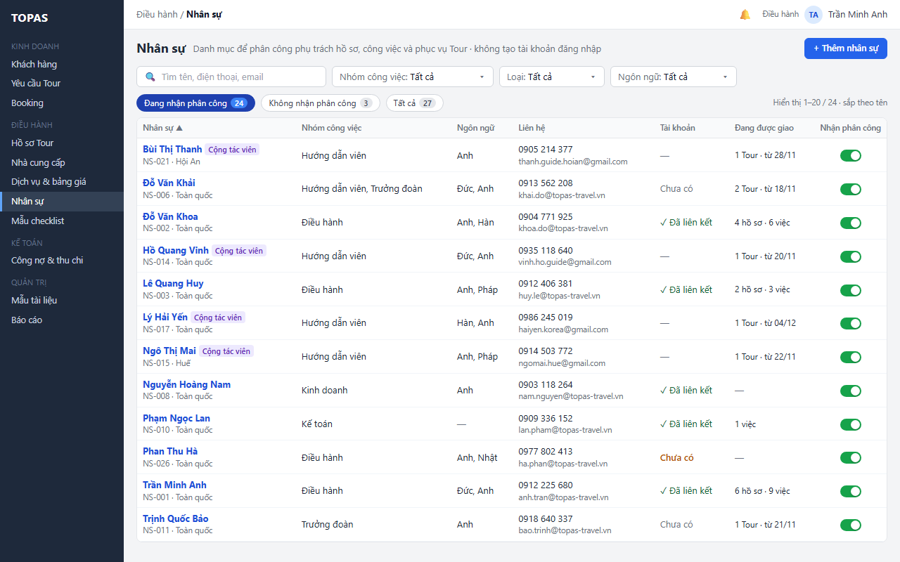
Lọc theo nhóm công việc và ngôn ngữ để tìm người phù hợp; số trên chip tính theo bộ lọc.
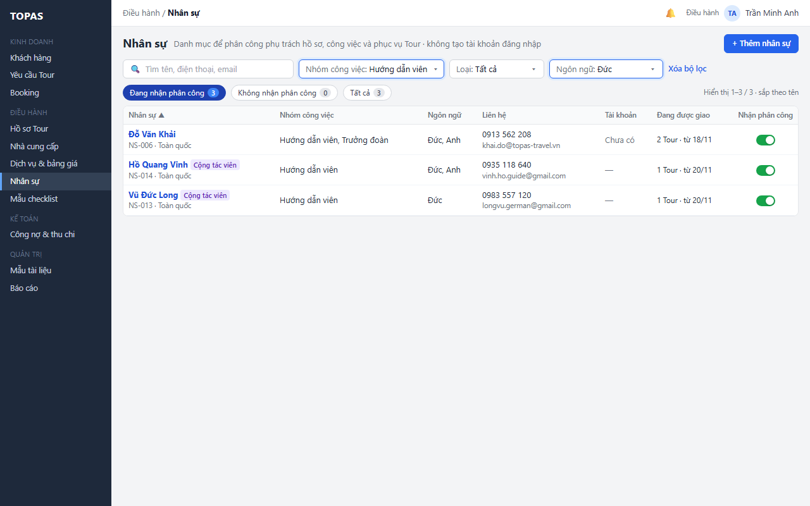
Phân biệt không khớp bộ lọc với chưa có dữ liệu; gợi ý thêm nhân sự.
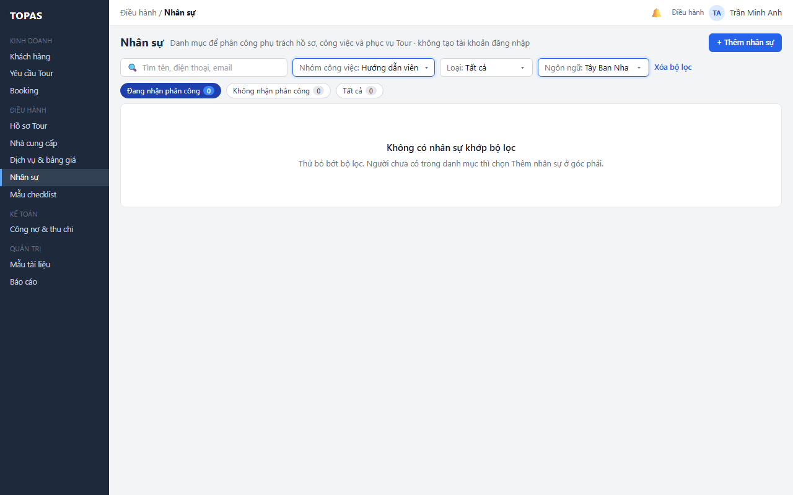
Giữ bộ lọc và cho thử lại khi không tải được dữ liệu.
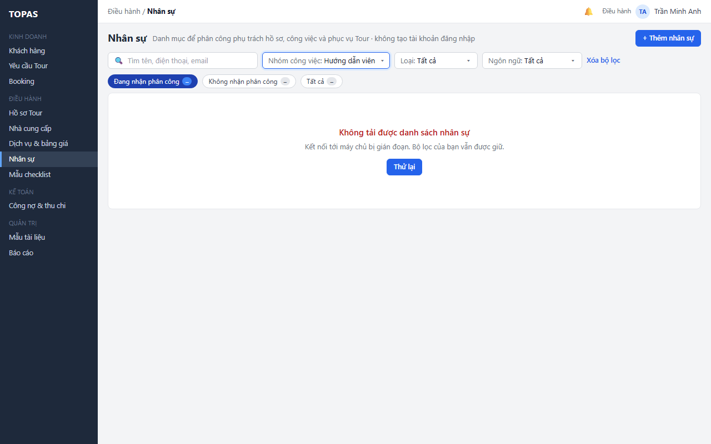
Nhập thông tin, liên hệ, nhóm công việc, ngôn ngữ; khu vực và nhận phân công có sẵn giá trị mặc định.
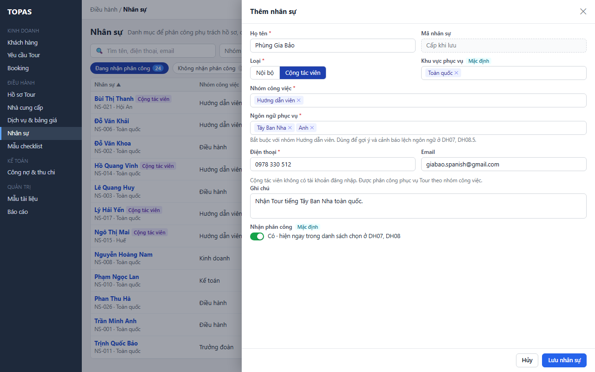
Báo lỗi cạnh trường (thiếu nhóm công việc, trùng điện thoại) và giữ dữ liệu đã nhập.
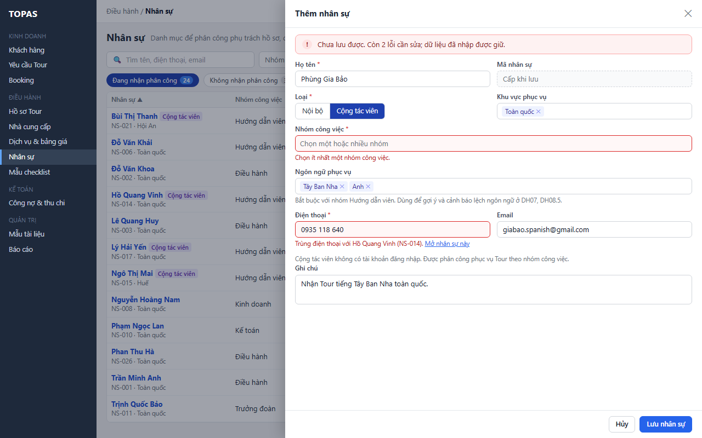
Nhân sự mới hiện đúng vị trí theo tên, tô sáng, có nhãn Mới; số trên chip cập nhật.
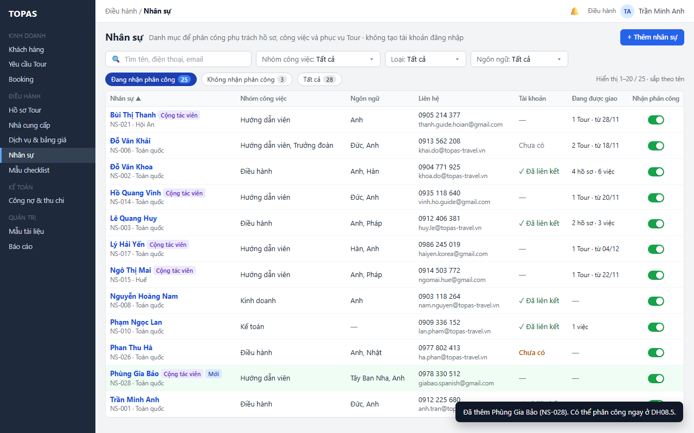
Sửa thông tin trong một form, một nút Lưu; thấy ngay nhân sự Điều hành chưa liên kết tài khoản thì chưa được giao phụ trách hồ sơ.
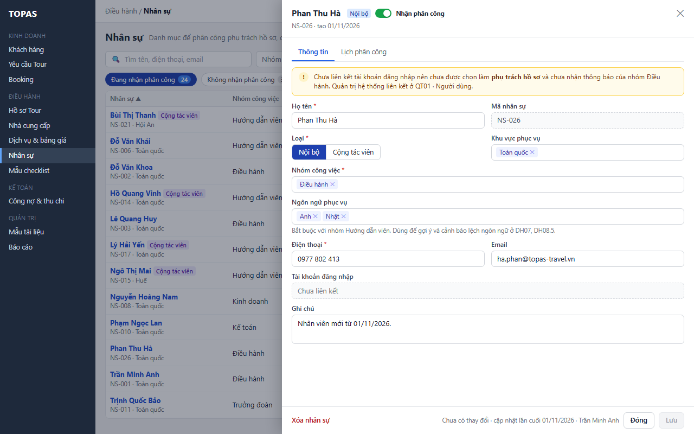
Trước khi lưu, thấy các phân công đang dùng nhóm công việc bị bỏ; phân công giữ nguyên.
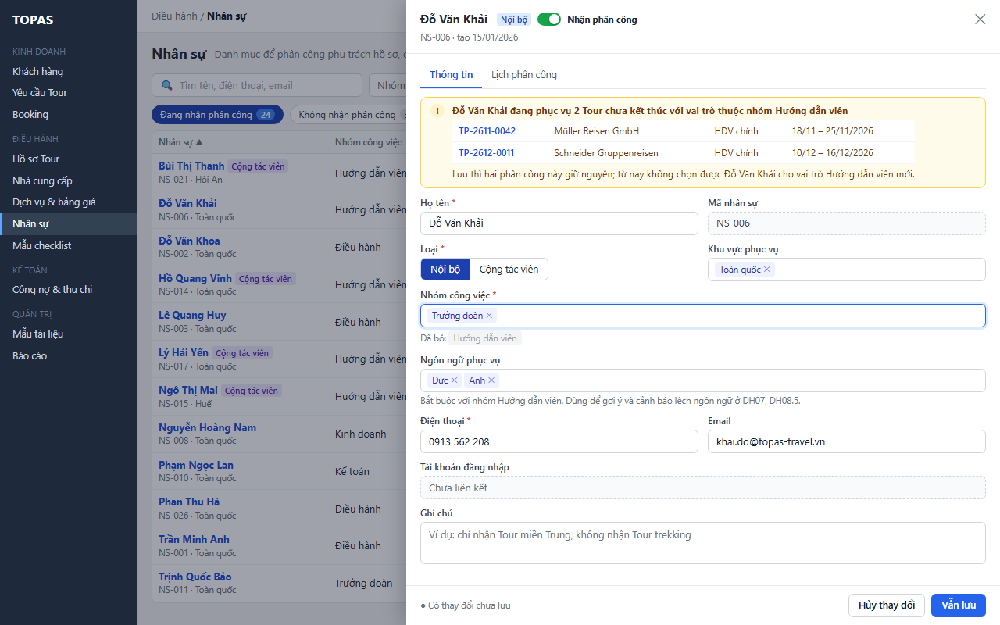
Xem hồ sơ đang phụ trách, công việc chưa hoàn tất và lịch phục vụ Tour từ hôm nay; bấm Tour Code mở hồ sơ.
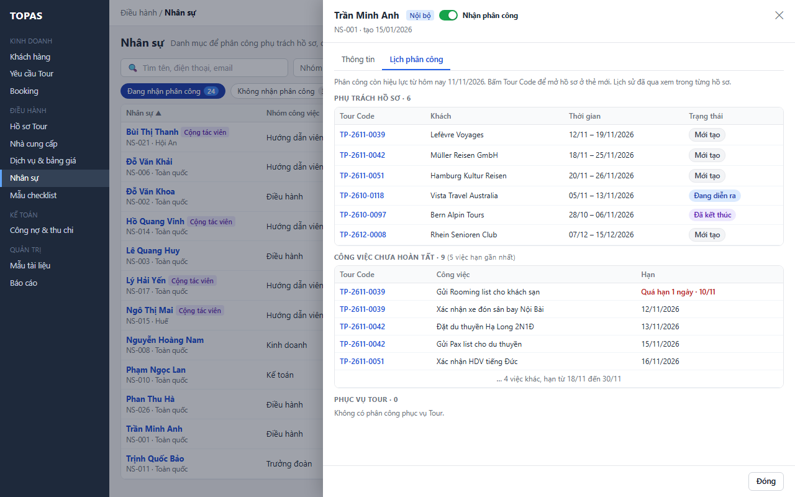
Nhân sự vừa được sửa ở phiên khác: không ghi đè, giữ dữ liệu trên form, cho xem bản mới.
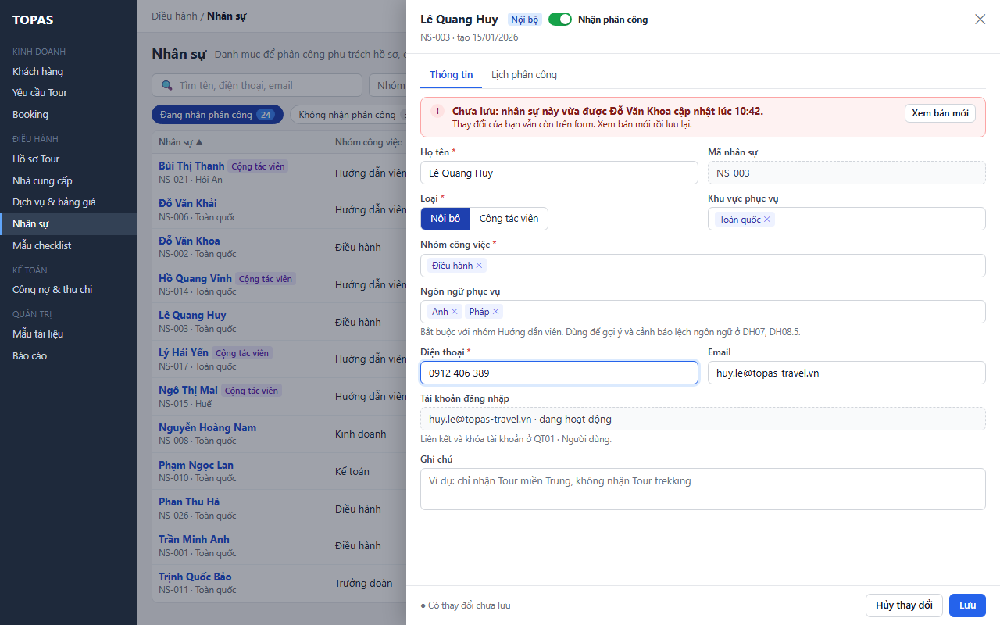
Thấy hồ sơ, công việc và lịch phục vụ đang giao cho người này và điều gì xảy ra sau khi tắt, trước khi xác nhận.
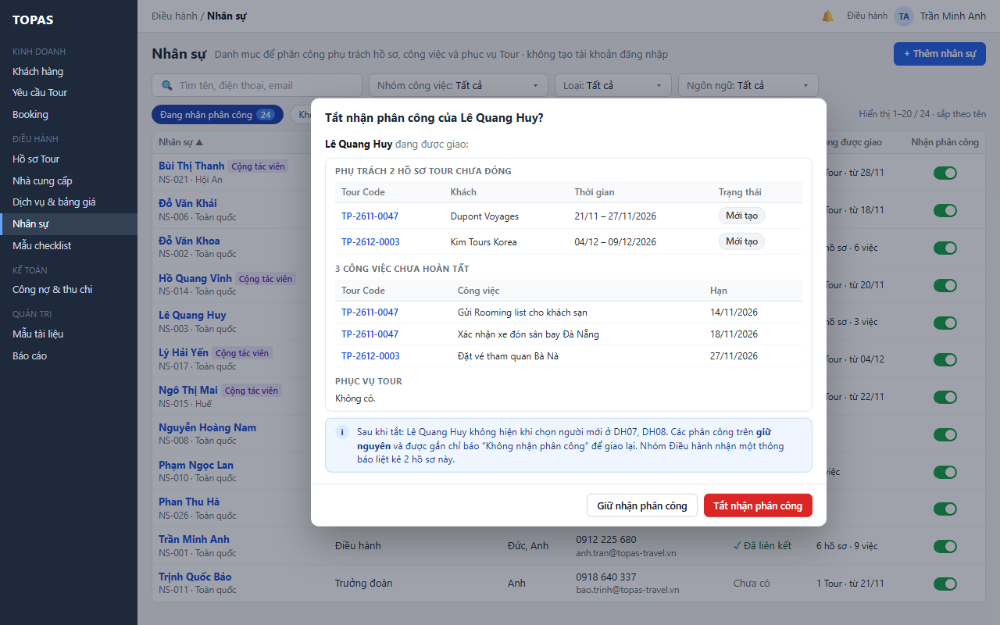
Dòng mờ đi, giữ tại chỗ, có chỉ báo việc cần giao lại; số đếm cập nhật; thông báo có Hoàn tác.
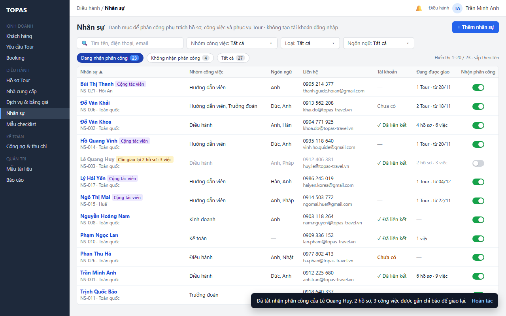
Ở chip Không nhận phân công, bật công tắc là lưu ngay; dòng tô sáng; thông báo có Hoàn tác.
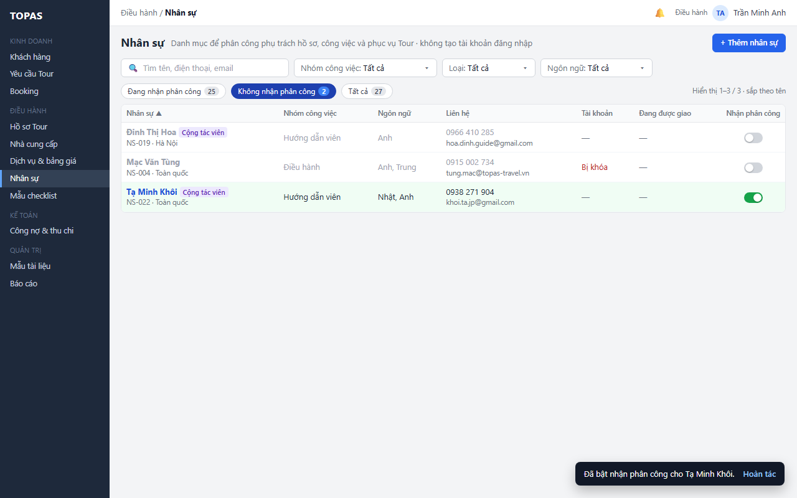
Xóa nhân sự tạo nhầm khi chưa được phân công ở đâu; nhắc tắt nhận phân công nếu chỉ tạm ngừng.
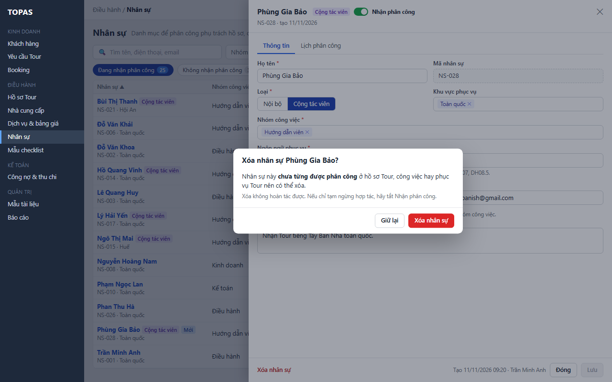
Nút Xóa khóa kèm lý do; gợi ý tắt nhận phân công.
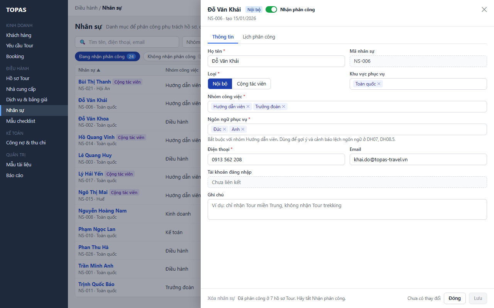